OSCP · OSWP · PWPP · PWPA · PAPA · EnCE · Linux+ · LPIC-1 · Network+ · Security+ · Pentest+ · eJPT · eWPT · BSc · PGCert
Disgruntled Employee (Official Writeup)
Lab can be found at: https://webverselabs-pro.com/
You have been given credentials, so log in as john.smith@techcorp.com with Password123!
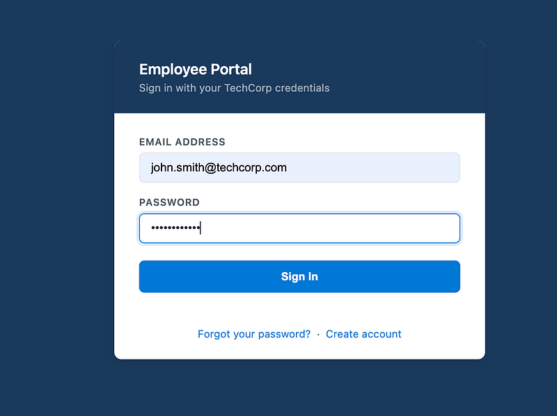
When you log in, you’ll see that Sarah Johnson has been promoted and you have been de-moted and you have lost access to documents. These are/were your clues:
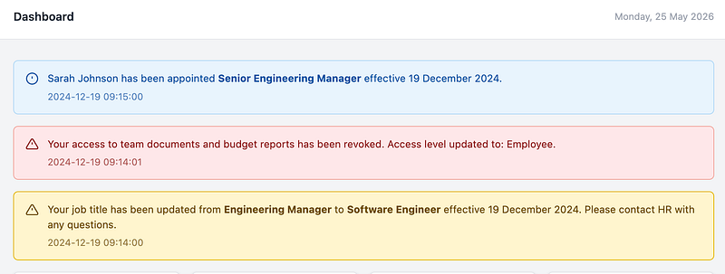
Note: if you log back into John’s account at this point, the info about Sarah will NOT be there. This is intentional and it’s supposed to make you study what is on the page. If you were capturing traffic, you’ll see Sarah Johnson in the response (plus the lab info on WebVerse mentions Sarah Johnson too).
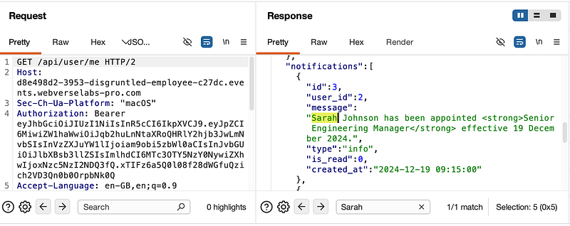
Next, log out of John’s account and go to the forgotten password link:
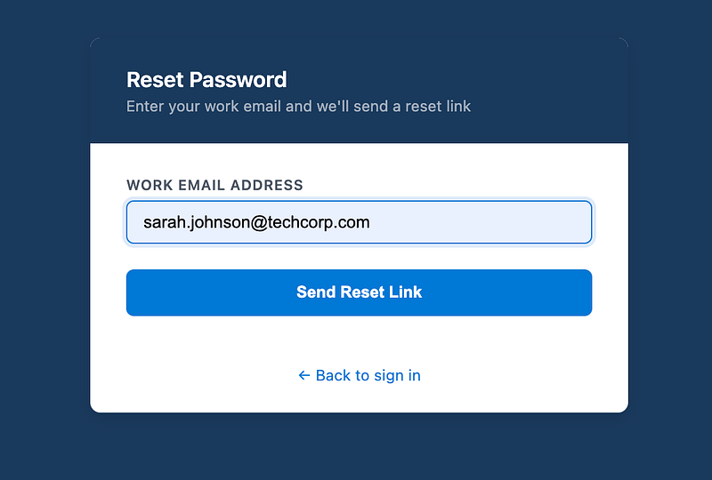
You’ll see the URL changes and expects a token. The error message hints at encoding the email as this is the token:
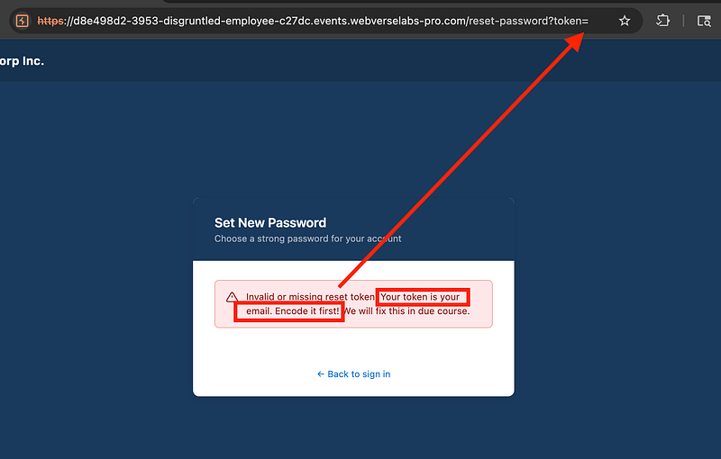
Base64 encode Sarah’s email (token) and take a copy of it:
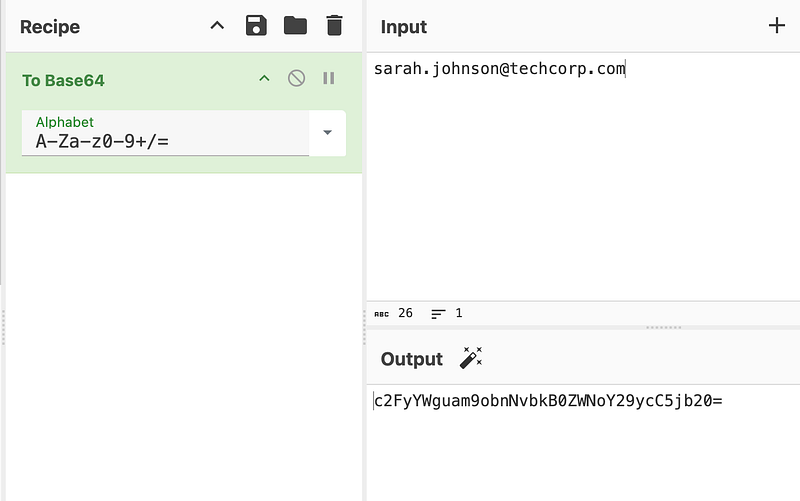
Add it to the token parameter in the URL:
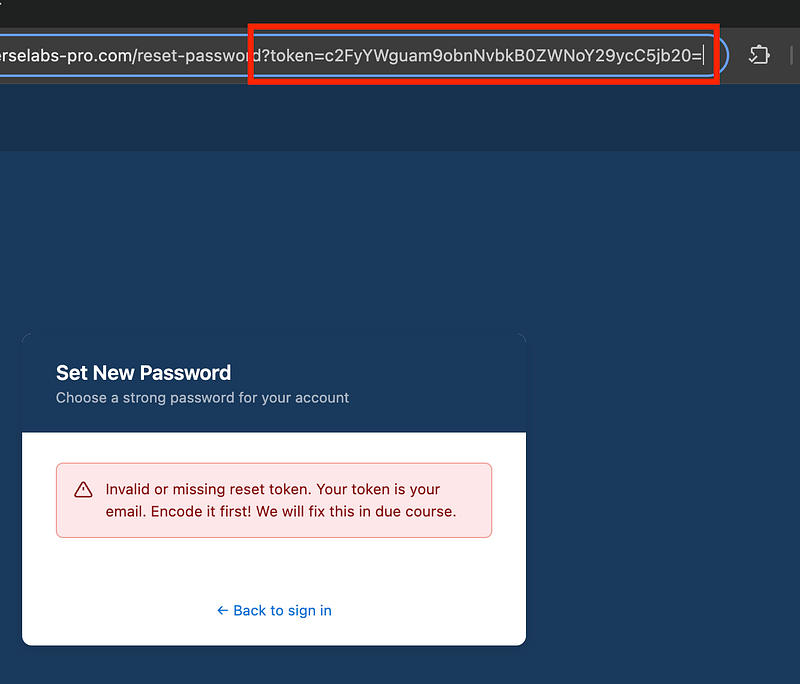
This will let you set a new password for Sarah’s account:
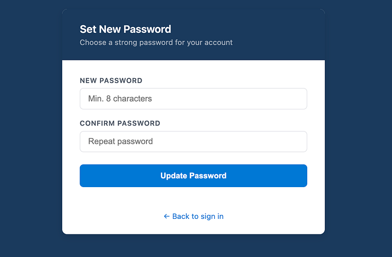
From here, log in as Sarah and go to “My Documents” on the left:
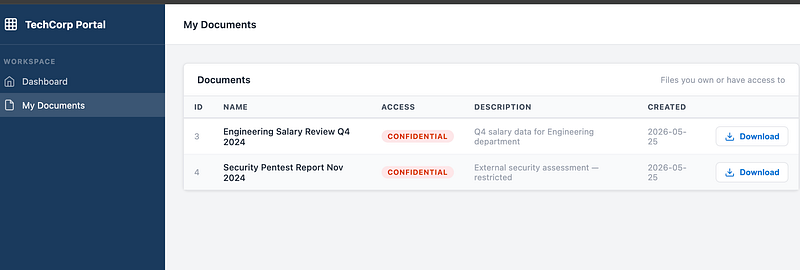
Download the Salary Review file and you’ll find a password in plaintext:
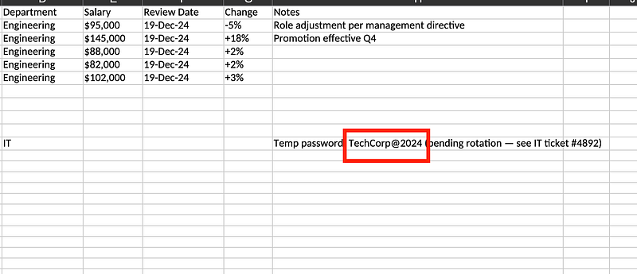
Where can you put the password? Well, there is a password required for the 2nd file:
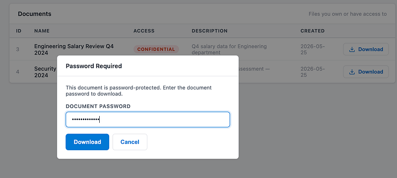
This pdf file is a pentest report and says that tech corp is vulnerable to mass assignment:
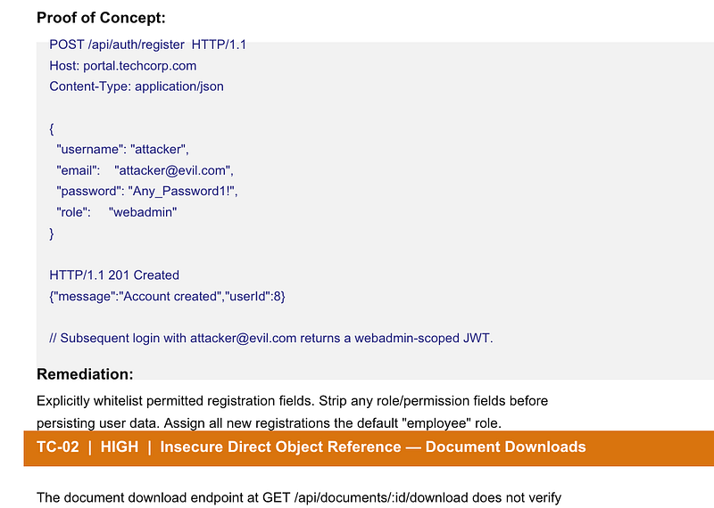
Log out of Sarah’s account and select “Create account”:
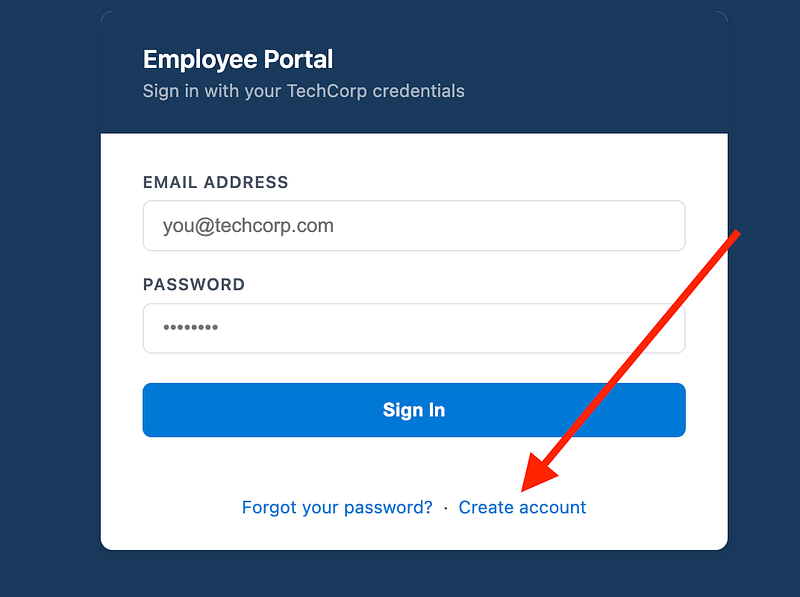
Capture the request in your proxy and add a role of “webadmin”:
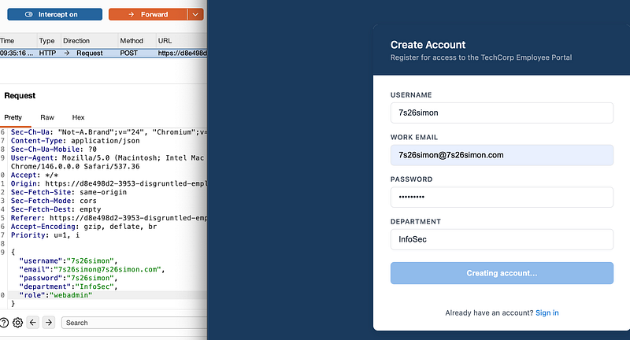
Log into the account and you’ll see you have upgraded to “webadmin” and you now have an “Admin Panel” on the left side. Select it and you’ll see a list of employees. Promote John Smith back to manager:
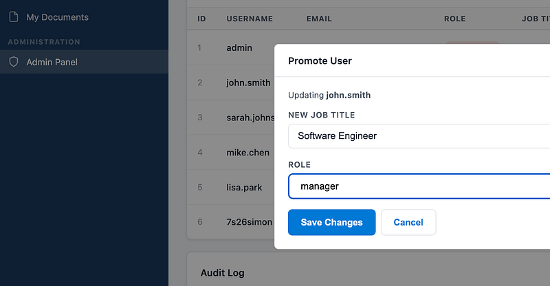
John will now be a manager with an updated salary:
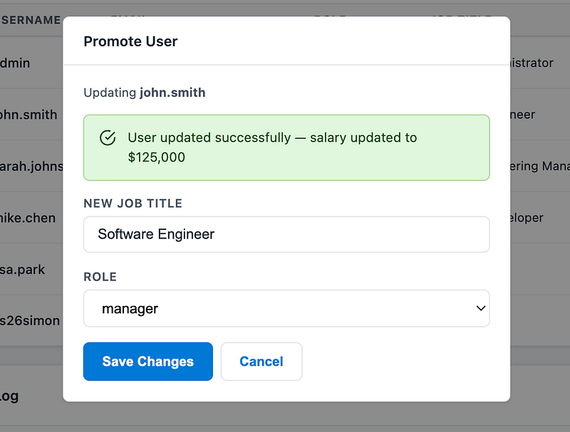
For fun, you can also de-mote Sarah and clear the logs (this isn’t necessary for the flag)
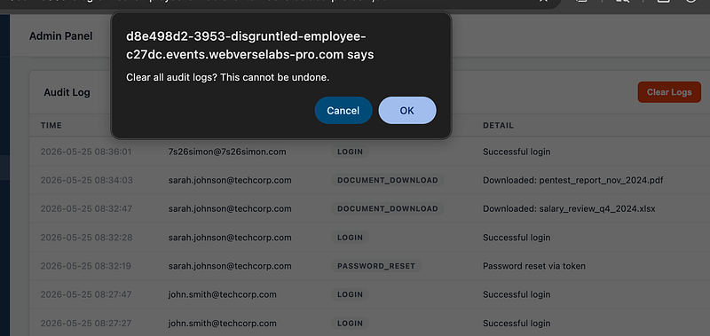
Now go back and log in as John for the flag:
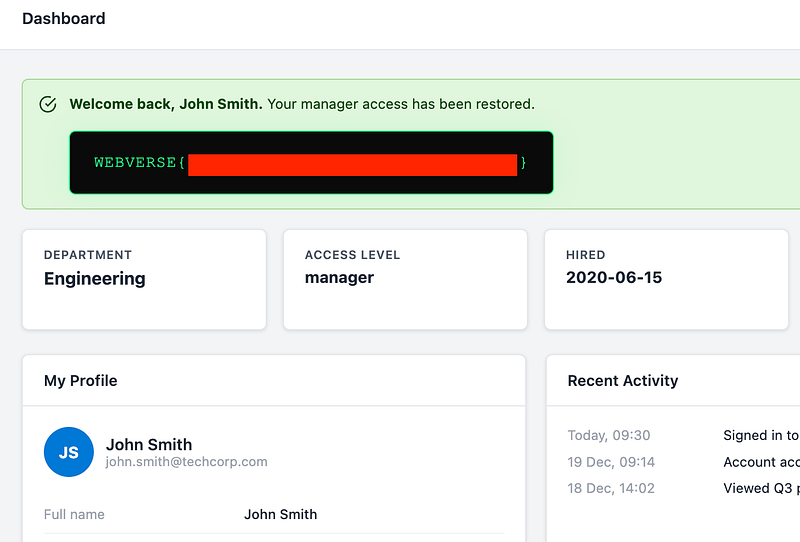
Thanks for following along!
🍺 Quick message to readers: if my writeups help you, please consider a small donation to my buymeacoffee link here. This is not required but is very much appreciated! 🍺